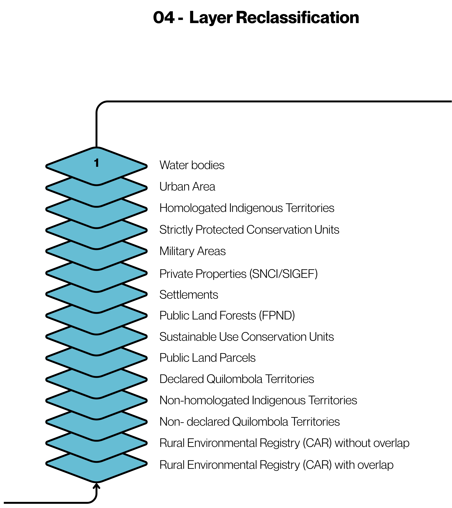

04. Layer Reclassification
In this stage, the land tenure layers are reclassified based on the hierarchy defined by the AHP method, assigning each class a priority level that will be used in resolving spatial conflicts. This stage transforms the conceptual hierarchy (AHP weights) into numerical values applicable to map algebra.
How it Works
- Calculation of layer weights: For each land tenure class, grades are assigned for the defined criteria (legal security, geometric precision, overlap, and stability), following the Saaty scale. These grades are weighted by the weights derived from the AHP, resulting in a global weight per class.
- Definition of the hierarchy: The classes are ordered based on the global weight, defining the priority level of each one in the land tenure class.
- Assignment of pixel values: Each land tenure class receives a numerical value corresponding to its hierarchical level, allowing its differentiation in map algebra operations.
- Generation of reclassified layers: Raster images are generated for each land tenure class, in which the pixel value directly represents its hierarchical priority.

Table 3 - Calculation of the Hierarchy of Land Tenure Layers
| Land Tenure Class | Legal Security | Geometric Precision | Overlap | Domain Stability | Global Weight (AHP) | Hierarchical Level |
|---|---|---|---|---|---|---|
| Water body | 9 | 9 | 9 | 9 | 9.00 | 1 |
| Urban Grid | 9 | 9 | 9 | 9 | 9.00 | 2 |
| Homologated Indigenous Territory (TI) | 9 | 5 | 9 | 9 | 7.96 | 3 |
| Integral Protection Conservation Unit (UC) | 9 | 5 | 8 | 8 | 7.78 | 4 |
| Military Area | 9 | 4 | 9 | 9 | 7.70 | 5 |
| Private Property (SIGEF/SNCI) | 7 | 9 | 7 | 7 | 7.52 | 6 |
| Settlement | 7 | 5 | 5 | 6 | 6.18 | 7 |
| Public Lands - Undesignated Public Forest | 5 | 5 | 5 | 5 | 5.00 | 8 |
| Sustainable Use Conservation Unit (UC) | 5 | 5 | 4 | 5 | 4.88 | 9 |
| Public Lands | 5 | 5 | 4 | 4 | 4.82 | 10 |
| Declared Quilombola Territory | 5 | 4 | 4 | 4 | 4.56 | 11 |
| Non-Homologated Indigenous Territory (TI) | 4 | 4 | 3 | 4 | 3.88 | 12 |
| Non-Declared Quilombola Territory | 3 | 4 | 3 | 4 | 3.32 | 13 |
| Private Property (CAR) without overlap | 2 | 4 | 1 | 3 | 2.46 | 14 |
| Private Property (CAR) with overlap | 2 | 4 | 1 | 3 | 2.46 | 15 |
Note: Private Property from CAR received two hierarchy levels (14 and 15) to distinguish between CAR without overlap and CAR with overlap respectively.
At the end of the conversion, 14 images of each land tenure layer were generated, where the pixel value is equal to its assigned hierarchical level.
Code for conversion and analysis of the Hierarchy of land tenure layers
Tips for collapsed sections
# Import modules
from qgis import processing
import subprocess
import os
from concurrent.futures import ThreadPoolExecutor # For parallelism
import datetime
import numpy
import geopandas as gpd
import rasterio
from exactextract import exact_extract
from osgeo import ogr
from rasterio.mask import mask
import numpy as np
# Standalone Environment Configuration
qgis_prefix = r'C:\Program Files\QGIS 3.xx\apps\qgis'
gdal_prefix = r'C:\\Program Files\\QGIS 3.44.4\\bin\\'
# Brazil Hierarchy
def processar_brasil_final(folderIn, listData, folderOut):
"""
ext_coords: [xmin, ymin, xmax, ymax] in meters (ESRI:102033)
listData: [{'src': 'car.gpkg', 'order': 10}, {'src': 'sigef.gpkg', 'order': 1}]
"""
gdal_path = os.path.join(gdal_prefix, 'gdal_rasterize.exe')
path_overlap = os.path.join(folderOut, 'brasil_contagem_overlap_10m.tif')
path_tenure = os.path.join(folderOut, 'brasil_landtenure_hierarquia_10m.tif')
# Options to support billions of pixels (Brazil 10m)
# TILED=YES is vital to be able to open the file later without crashing
creation_opts = [
'-co', 'COMPRESS=LZW',
'-co', 'BIGTIFF=YES',
'-co', 'TILED=YES',
'-co', 'BLOCKXSIZE=1024',
'-co', 'BLOCKYSIZE=1024',
'-co', 'NUM_THREADS=ALL_CPUS'
]
# Create a blank image
print("Creating empty base of Brazil...")
primeira_camada = os.path.join(folderIn, listData[0]['src'])
cmd_create = [
gdal_path,
'-burn', '0', # Does not paint anything, just creates the file
'-tr', '10', '10',
'-te', str(-1522717.72), str(-215371.54), str(3070231.55), str(4209750.56),
'-ot', 'byte', # Int16 allows count above 255
#'-a_nodata', '0',
'-co', 'COMPRESS=LZW', '-co', 'BIGTIFF=YES', '-co', 'TILED=YES',
primeira_camada, path_overlap
]
subprocess.run(cmd_create)
# Overlap count
# Objective: Pixel = number of overlapping layers
print(f"[{datetime.datetime.now()}] Starting Overlap Count...")
for i, item in enumerate(listData):
lyr_path = os.path.join(folderIn, item['src'])
cmd_ov = [
gdal_path,
'-burn', '1', # Each layer is worth 1 in the count
'-add', # ADDS 1 to the current pixel value
lyr_path, path_overlap
]
subprocess.run(cmd_ov)
print(f" > Layer {os.path.basename(item['src'])[0:-4]} accounted for in the overlap.")
# --- 2. PRODUCT: LAND TENURE (HIERARCHY) ---
# Objective: The pixel value is the 'order' of the highest priority layer
print(f"\n[{datetime.datetime.now()}] Starting Land Hierarchy...")
# IMPORTANT: We sort from the LARGEST 'order' to the SMALLEST 'order'.
# Thus, the highest priority layer (e.g., 1) is painted LAST,
# replacing any value that was there.
list_hierarquia = sorted(listData, key=lambda x: x['order'], reverse=True)
subprocess.run([
gdal_path, '-burn', '0', '-tr', '10', '10',
'-te', str(-1522717.72), str(-215371.54), str(3070231.55), str(4209750.56),
'-ot', 'Byte',
'-co', 'COMPRESS=LZW', '-co', 'BIGTIFF=YES', '-co', 'TILED=YES',
os.path.join(folderIn, listData[0]['src']), path_tenure
])
for item in list_hierarquia:
print(f"Painting Priority {item['order']}: {item['src']}")
# WITHOUT the -add flag. The new value overwrites the old one.
subprocess.run([
gdal_path, '-burn', str(int(item['order'])),
os.path.join(folderIn, item['src']), path_tenure
])
print(f"\n[{datetime.datetime.now()}] Processing completed successfully!")
def selectedFeature_v2(path_raster, path_vetor, ordem_prioridade, path_output):
log = open('C:/Users/Bernard/Documents/Projetos/MalhaFundiaria/datasets/tipos_malha_fundiaria/BR/logs/log_filtro_camadas.txt','w')
if not os.path.exists(path_output):
os.makedirs(path_output)
raster_path = os.path.join(path_raster, 'brasil_landtenure_hierarquia_10m.tif')
# 1. Open the Raster
with rasterio.open(raster_path) as src:
raster_crs = src.crs.to_string()
nodata = src.nodata
for w in ordem_prioridade:
if int(w['order']) > 2:
weight = int(w['order'])
mask_name = w['src'][0:-4]
vetor_input = os.path.join(path_vetor, w['src'])
output_file = os.path.join(path_output, f'selected_mask_{mask_name}.shp')
log.writelines(f"\n[{datetime.datetime.now()}] --- Processing: {mask_name} (Weight: {weight}) ---")
log.writelines('\n')
print(f"\n[{datetime.datetime.now()}] --- Processing: {mask_name} (Weight: {weight}) ---")
if not os.path.exists(vetor_input): continue
# 2. Read Vector using OGR (Native to QGIS, ignores PyOgrio errors)
ds = ogr.Open(vetor_input)
if ds is None:
print(f" Error opening vector: {vetor_input}")
continue
lyr = ds.GetLayer()
# Create an output GeoPackage for the selected ones
driver_out = ogr.GetDriverByName("ESRI Shapefile")
if os.path.exists(output_file): driver_out.DeleteDataSource(output_file)
out_ds = driver_out.CreateDataSource(output_file)
out_lyr = out_ds.CreateLayer(mask_name, geom_type=lyr.GetGeomType(), srs=lyr.GetSpatialRef())
# Copy fields from the original to the new one
lyr_def = lyr.GetLayerDefn()
for i in range(lyr_def.GetFieldCount()):
fld_defn = lyr_def.GetFieldDefn(i)
fld_name = fld_defn.GetName()
# ONLY CREATES THE FIELD IF THE NAME IS NOT EMPTY
if fld_name and fld_name.strip():
out_lyr.CreateField(fld_defn)
else:
print(f" [Warning] Skipping invalid field at index {i}")
# 3. Process feature by feature (Geometry Loop)
log.writelines(f" [2/3] Analyzing {lyr.GetFeatureCount()} features...")
log.writelines('\n')
print(f" [2/3] Analyzing {lyr.GetFeatureCount()} features...")
count_selected = 0
out_lyr.StartTransaction()
for feat in lyr:
geom = feat.GetGeometryRef()
if geom is None: continue
# Convert OGR geometry to GeoJSON/Python format for rasterio
geom_json = eval(geom.ExportToJson())
try:
# Quick crop (Windows-based sampling)
out_image, _ = mask(src, [geom_json], crop=True,filled=False,all_touched=True)
out_image = out_image[0]
valid_pixels = out_image.compressed()
pixels_validos = valid_pixels.size
pixels_alvo = np.sum(valid_pixels == weight) #np.sum(out_image == weight)
# Criterion: 10% overlap
if pixels_validos > 0 and (pixels_alvo / pixels_validos) >= 0.1:
out_lyr.CreateFeature(feat)
count_selected += 1
except Exception as e:
continue
out_lyr.CommitTransaction()
out_ds = None # Closes and saves the file
ds = None
log.writelines(f" [3/3] Success! {count_selected} features saved in Shapefile.")
log.writelines('\n')
print(f" [3/3] Success! {count_selected} features saved in Shapefile.")
log.writelines(f"\n[{datetime.datetime.now()}] Completed!")
log.close()
print(f"\n[{datetime.datetime.now()}] Completed!")